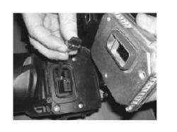
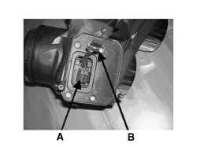

5540BK CHECK THE CONTINUITY OF THE LOW BEAM WIRING INSIDE THE HEADLAMP
- Path
- Test > 55 ELECTRICAL EQUIPMENT > 5540 EXTERIOR LIGHTING > 5540B HEADLAMPS > 5540BK CHECK THE CONTINUITY OF THE LOW BEAM WIRING INSIDE THE HEADLAMP
- Kind
- test / check procedure
- Applies to
- engines: 2.2 JTS, 3.2 JTS; all production periods; only with equipment: Gas discharge headlamps
- Interactive page
- https://sloeber94.github.io/elrnDB-aBrrSpdr/en/#/946001096
Applies to: engines: 2.2 JTS, 3.2 JTS; all production periods; only with equipment: Gas discharge headlamps
CHECK TO BE PERFORMED | RESOLUTION IF THE CHECK IS NOT OK | |
|---|---|---|
1 | Disconnect the negative battery cable. Remove the Master Op. 5540B81 LEFT GAS DISCHARGE LIGHT CLUSTER - R.R. / Slave headlamp Op. 5540B82 RIGHT GAS DISCHARGE LIGHT CLUSTER - R.R. Disconnect the control unit from the headlamp Connect the diagnostic tester in ohmmeter mode and check the continuity between Pin 1 of the 14-way connector and Pin 5 of the 21-way connector for connection to the ballast control unit | Replace the headlamp |


A - Electrical connector
B - Shielded cable
Topics linked from this page (3)
- 5540B43 CONTROL UNIT FOR ONE RIGHT GAS DISCHARGE LIGHT CLUSTER ONE LH OR RH - R.R. WITH LIGHT CLUSTER REMOVED
- 5540B81 LEFT GAS DISCHARGE LIGHT CLUSTER - R.R.
- 5540B82 RIGHT GAS DISCHARGE LIGHT CLUSTER - R.R.